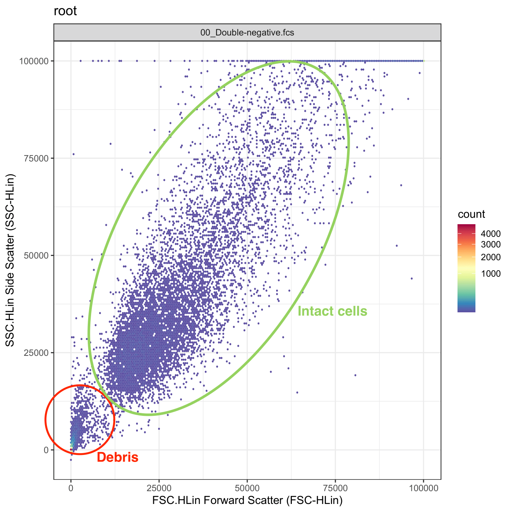
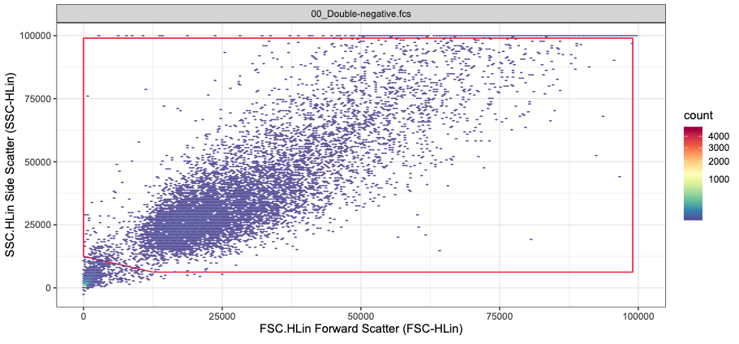
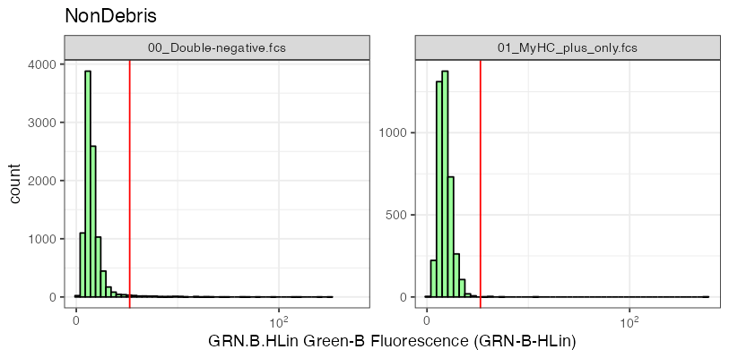

Gating live cells
Preparing samples for flow cytometry inevitably damages or kills some cells. These “debris” need to be excluded from subsequent analysis. Cellular debris can be identified in SSC vs FSC plots, enabling their easy removal using gates.

In FlowFate, debris removal is accomplished using a hard-coded rectangle gate, meaning that the gate boundaries are predefined and cannot be modified by users. It is essential for users to consider this aspect during acquisition to ensure that intact cells accumulate within the specified window (for more information, see below).
1) Set up the gate matrix
We first need to set up an m x n gate matrix:
n (number of columns) corresponds to the gating dimensions. Here n = 2 (SSC + FSC).
m (number of rows) corresponds to the number of individual points that make up the rectangle gate. Here m = 5.
Each row comprises the X and Y coordinates of a gate edge. Here we use a polygon with 5 edges, thus the gating matrix has 5 rows. The column names have to be renamed becuase they need to match the channel names used to gate the data (here SSC.HLin and FSC.HLin).
Note: Forward- and side-scatter channel names vary depending on the flow cytometer used. Below, for illustration purposes, we name them “SSC.HLin” and “FSC.HLin” because this matches the channel names from our machine. In FlowFate, the corresponding channels can be selected by the user.
# creating the gate matrix
pgn_cut <- matrix(c(12500, 99000, 99000,0,0,6250, 6250, 99000, 99000,12500), ncol = 2, nrow = 5)
# renaming the columns to match the gating dimensions
colnames(pgn_cut) <- c("SSC.HLin", "FSC.HLin")The gating matrix now looks like this
#> SSC.HLin FSC.HLin
#> [1,] 12500 6250
#> [2,] 99000 6250
#> [3,] 99000 99000
#> [4,] 0 99000
#> [5,] 0 12500and the created gate like this (red rectangle)

2) Create the NonDebris gate
Until now we have only create the gating matrix. We use this matrix
to create a NonDebris gate with flowCore’s
polygonGate( ) function. The filterId argument
uniquely identifies the gate.
gate_non_debris <- reactive(polygonGate(filterId = "NonDebris", .gate = pgn_cut))Gating GFP+ cells
FlowFate was designed to study the effect of GFP-labeled KRAS on C2C12 differentiation. Consequently, our analysis must concentrate on successfully transfected cells. Nonetheless, background noise and autofluorescence introduce unspecific fluorescent signals from untransfected cells. To address this, we use a GFP-threshold in our data analysis to effectively exclude untransfected cells with emissions below a specified threshold. This approach ensures that our analysis focuses on relevant, transfected cells while excluding undesired noise.
The GFP threshold is determined using our two control samples:
a double-negative control sample: untransfected, unlabelled C2C12
a MyHC-only control sample: untransfected C2C12, labelled with an eFluor660-labeled antibody targeting the heavy-chain of the myosin protein (MyHC).
In the control samples, the fluorescence signals observed in the green channel “GRN.B.HLin” are a result of cellular autofluorescence and thus unspecific. Thus, by analyzing the intensity distribution, we can establish a threshold that effectively excludes a majority of the events. This threshold (red line in the figure below) becomes a reference point to distinguish between untransfected cells (falling below this treshold) and transfected cells (above this threshold).
To gate the transfected cells in all our datasets, we apply this established threshold and remove cells falling below it.

1) Determine a GFP threshold
Most of the computation is wrapped inside a custom function
get_lowerLimit( ). This function has several arguments:
- gs: GatingSet to use
- datasets: Datasets used to establish the threshold (i.e. control samples)
- node: Existing gate to extract data from. For example, we establish the GFP threshold based on the intensity distribution in the green channel of intact cells. Thus, we need to use the data from the NonDebris gate.
- ch_gate: the channel based on which the gate is determined (here the GPF channel “GRN.B.HLin”)
- r: required to use the golem framework
get_lowerLimit <- function(gs, datasets, node, ch_gate, r) {
# extract the data as a flowSet
x <- gs_pop_get_data(r$gs[[datasets]], node) |> cytoset_to_flowSet()
# create a quantile gate using extracted data and the respective channel name
y <- create_quantile_gate(x, gate_channel = ch_gate)
# average the minimum values from the respective quantile gateS(!)
z <- mean(c(y[[1]]@min, y[[2]]@min))
}We use openCyto’s
gate_quantile( ) function to algorithmically establish the
GFP threshold. Based on the probs (probabilities) argument,
this function determines sample quantiles and create a rectangle gate
excluding events outside this quantile. For example, if
probs = 0.25 or probs = 0.5,
gate_quantile( ) establishes the threshold at the first or
second quartile, respectively. The created interval gate then ranges
from the established threshold to infinity.
In our case, we used probs = 0.99 to exclude 99% of the
events in our control samples. To avoid unreasonably high thresholds due
to outliers we did not use probs = 1 which may have lead to
a loss of transfected cells. In addition, we averaged the threshold
obtained from both control samples and store this value in the
lower_limit_gfp_gate variable.
lower_limit_gfp_gate <- reactive({
get_lowerLimit(gs = r$gs,
datasets = c(input$negative_control, input$positive_control_myhc),
node = "NonDebris",
ch_gate = input$kras_channel,
r = r)
}) |> bindEvent(input$Curate)